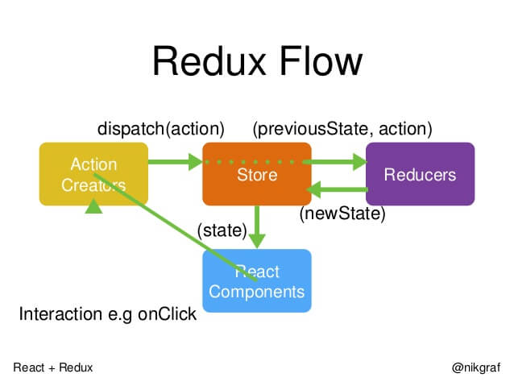

React框架学习
网址：
英文网址：https://reactjs.org/
### React的起源和发展
起初facebook在建设 instagram（图片分享）的时候，因为牵扯到一个东东叫数据流，那为了处理数据流并且还要考虑好性能方面的问题嘞，Facebook开始对市场上的各种前端MVC框架去进行一个研究，然而并没有看上眼的，于是Facebook觉得，还是自己开发一个才是最棒的，那么他们决定抛开很多所谓的“最佳实践”，重新思考前端界面的构建方式，他们就自己开发了一套，果然大牛创造力还是很强大的。
前端的最好的ui框架 优雅
React当前的版本有一个特点：函数式编程
js的特点也是函数式编程
### React的出发点
基于HTML的前端界面开发正变得越来越复杂，其本质问题基本都可以归结于如何将来自于服务器端或者用户输入的动态数据高效的反映到复杂的用户界面上。而来自Facebook的React框架正是完全面向此问题的一个解决方案，按官网描述，其出发点为：用于开发数据不断变化的大型应用程序（Building large applications with data that changes over time）。相比传统型的前端开发，React开辟了一个相当另类的途径，实现了前端界面的高性能高效率开发。
### React与传统MVC的关系
轻量级的视图层框架！
React不是一个完整的MVC框架，最多可以认为是MVC中的V（View），甚至React并不非常认可MVC开发模式；
### React高性能的体现：虚拟DOM
React是第一个将虚拟DOM应用在前端的框架
React高性能的原理 SSSSSSSSSSSS：
在Web开发中我们总需要将变化的数据实时反应到UI上，这时就需要对DOM进行操作。而复杂或频繁的DOM操作通常是性能瓶颈产生的原因（如何进行高性能的复杂DOM操作通常是衡量一个前端开发人员技能的重要指标）。
React为此引入了虚拟DOM（Virtual DOM）的机制：在浏览器端用Javascript实现了一套DOM API。基于React进行开发时所有的DOM构造都是通过虚拟DOM进行，每当数据变化时，React都会重新构建整个DOM树，然后React将当前整个DOM树和上一次的DOM树进行对比，得到DOM结构的区别，然后仅仅将需要变化的部分进行实际的浏览器DOM更新。而且React能够批处理虚拟DOM的刷新，在一个事件循环（Event Loop）内的两次数据变化会被合并，例如你连续的先将节点内容从A-B,B-A，React会认为A变成B，然后又从B变成A UI不发生任何变化，而如果通过手动控制，这种逻辑通常是极其复杂的。
尽管每一次都需要构造完整的虚拟DOM树，但是因为虚拟DOM是内存数据，性能是极高的，部而对实际DOM进行操作的仅仅是Diff算法，因而能达到提高性能的目的。这样，在保证性能的同时，开发者将不再需要关注某个数据的变化如何更新到一个或多个具体的DOM元素，而只需要关心在任意一个数据状态下，整个界面是如何Render的。数据驱动，声明式
data
state(可以改变的state)
### React的特点和优势（面试）SSS
1. 虚拟DOM
我们以前操作dom的方式是通过document.getElementById()的方式，这样的过程实际上是先去读取html的dom结构，将结构转换成变量，再进行操作
而reactjs定义了一套变量形式的dom模型，一切操作和换算直接在变量中，这样减少了操作真实dom，性能真实相当的高，和主流MVC框架有本质的区别，并不和dom打交道
2. 组件系统（单向数据流） react中一切都是组件
react最核心的思想是将页面中任何一个区域或者元素都可以看做一个组件 component
那么什么是组件呢？
组件指的就是同时包含了html、css、js、image元素的聚合体
使用react开发的核心就是将页面拆分成若干个组件，并且react一个组件中同时耦合了css、js、image，这种模式整个颠覆了过去的传统的方式
3. 单向数据流
其实reactjs的核心内容就是数据绑定，所谓数据绑定指的是只要将一些服务端的数据和前端页面绑定好，开发者只关注实现业务就行了
4. JSX 语法
cli3 render( h=> h() )
在vue中，我们使用render函数来构建组件的dom结构性能较高，因为省去了查找和编译模板的过程，但是在render中利用createElement创建结构的时候代码可读性较低，较为复杂，此时可以利用jsx语法来在render中创建dom，解决这个问题，但是前提是需要使用工具来编译jsx
createElement 繁琐 ----》 jsx(javascript+xml) syntial sugar
var div = document.createElement('DIV')
var p= document.createElement('P')
div.appendChild(p)
(
<div>
<p></p>
</div>
)
### 创建第一个组件
react开发需要引入多个依赖文件：react.js、react-dom.js，分别又有开发版本和生成版本
在这里一开始，我们先学习es5的组件写法，React.createClass，需要引入的是15+
react.js中有React对象，帮助我们创建组件等功能
react-dom.js中有ReactDOM对象，渲染组件的虚拟dom为真实dom的爆发功能
在编写react代码的时候会大量的使用到jsx代码，但是需要编译：
1. 浏览器端编译，通过引入browser、babel等对引入的script内的代码做编译
2. 利用webpack等开发环境进行编译，将编译好的文件引入到应用中
//创建组件
var Hello = React.createClass({
render:function () {
//render函数和Vue组件里的render完全一样，在vue组件中可以不用编写render函数，这个时候可以使用template模板来编写组件的虚拟dom结构，然后vue组件会自动讲模板compile成虚拟dom结构放入到render中执行，但是react需要编写render函数
return (
//jsx语法 虚拟DOM
<div>asdasd</div>
)
}
})
//利用ReactDOM对象的render方法将组件渲染到某个节点里
ReactDOM.render(<Hello/>,document.getElementById("app")/app)
组件是通过React.createClass创建的（ES5），在es6中直接通过class关键字来创建
组件其实就是一个构造器,每次使用组件都相当于在实例化组件
react的组件必须使用render函数来创建组件的虚拟dom结构
组件需要使用ReactDOM.render方法将其挂载在某一个节点上
组件的首字母必须大写
### JSX语法糖
JSX是一种语法，全称：javascript xml
JSX语法不是必须使用的，但是因为使用了JSX语法之后会降低我们的开发难度，故而这样的语法又被成为语法糖
在不使用JSX的时候，需要使用React.createElement来创建组件的dom结构，但是这样的写法虽然不需要编译，但是维护和开发的难度很高，且可读性很差
```
var world = React.createElement('h1',{className:'abc',id:'haha'},[
React.createElement('span',null,'Hello'),
React.createElement('mark',null,'React')
])
//利用ReactDOM对象的render方法将组件渲染到某个节点里
ReactDOM.render(world,document.getElementById("app1"))
```
及时使用了JSX语法了之后，也是需要将其编译成原生的createElement的
JSX就是在js中使用的xml，但是，这里的xml不是真正的xml，只能借鉴了一些xml的语法，例如：
最外层必须有根节点、标签必须闭合
jsx借鉴xml的语法而不是html的语法原因：xml要比html严谨，编译更方便
### 组件dom添加样式 标签选择器 id 属性 style ={ { background: 'red'} } class(className)
在react里表达式的符号是 "{ }",作用和vue的表达式作用是一样的
想给虚拟dom添加行内样式，需要使用表达式传入样式对象的方式来实现：
```
<p style = { {color:'red',fontSize:2+'em'} }>Hello world</p>
```
行内样式需要写入一个样式对象，而这个样式对象的位置可以放在很多地方，例如React.createClass的配置项中、render函数里、组件原型上、外链js文件中
React推荐我们使用行内样式，因为react觉得每一个组件都是一个独立的整体
其实我们大多数情况下还是大量的在为元素添加类名、id以使用某些样式，但是需要注意的是，class需要写成className（因为毕竟是在写类js代码，会收到js规则的现在，而class是关键字）
```
<p className="bg-p" id="myp" style = { this.style }>Hello world</p>
```
### React Event
在react中，我们想要给组件的dom添加事件的话，也是 需要在行内添加的方式，事件名字需要写成小驼峰的方式，值利用表达式传入一个函数即可
注意，在没有渲染的时候，页面中没有真实dom，所以是获取不到dom的
给虚拟dom结构中的节点添加样式。在行内添加,写成驼峰形式，值是一个函数名，需要用{}包裹
```
handleClick:function (e) {
alert(1)
},
render:function () {
return (
<div>
<button onClick = {this.handleClick} className="click-btn">click</button>
<button onDoubleClick = {this.handleClick} className="click-btn">click</button>
</div>
)
}
```
### 组件嵌套
将一个组件渲染到某一个节点里的时候，会将这个节点里原有内容覆盖
组件嵌套的方式就是将子组件写入到父组件的模板中去，且react没有Vue中的内容分发机制（slot），所以我们在一个组件的模板中只能看到父子关系
```
var Hello = React.createClass({
render(){
return (
<h1>
Hello
<World></World>
</h1>
)
}
})
var World = React.createClass({
render(){
return (
<mark>
World-<Person/>
</mark>
)
}
})
//无状态组件
var Person =function(){
return (<mark>lilei</mark>)
}
ReactDOM.render(<Hello/>,app)
```
>注意，react中jsx里的注释要写成{/* */}的方式
### React中的数据承载-Props/State
数据驱动、声明式渲染：
任意的视图变化都应该由数据来控制
//$(".a").html(0)
var num = 0
function renderNum () { $(".a").html(num) }
React也是基于数据驱动(声明式)的框架，组件中必然需要承载一些数据，在react中起到这个作用的是属性和状态（props & state）
1. 属性（props） 在组件外部传入（写在对应的组件上），或者内部设置（es5 getDefaultProps），组件内部通过this.props获得
2. 状态（state） 在组件内部设置或者更改，组件内部通过this.state获得
设置： getInitialState(){ return {} }
更改 ：自己状态自己更改 this.setState({key: value})
##### 属性(props)
属性一般是外部传入的，组件内部也可以通过一些方式来初始化的设置，属性不能被组件自己更改
属性是描述性质、特点的，组件自己不能随意更改
使组件拥有属性的方式：
1. 在装载（mount）组件的时候给组件传入
传入数据的时候，除了字符串类型，其他的都应该包上表达式，但是为了规整，所有的数据传递，最好都包上{}
```
var Gouzi = React.createClass({
render(){
console.log(this)
return (
<div>
<p>我的名字：{this.props.name}</p>
<p>我的性别：{this.props.sex}</p>
<p>我的年龄：{this.props.age}</p>
<p>我的父亲是：{this.props.father}</p>
</div>
)
}
})
let info = {
sex:'male',
father:'狗爸'
}
ReactDOM.render(<Gouzi {...info} name={"大狗子"} age={26}/>,app)
```
2. 父组件给子组件传入
父组件在嵌套子组件的时候为子组件传入，传入的方式和上面的方式一样
```
//父组件的render函数
render(){
return (
<div>
<p>父组件：</p>
<hr/>
<Son name={'大狗子'}/>
<Son name={'二狗子'}/>
</div>
)
}
```
3. 子组件自己设置
子组件可以通过getDefaultProps来设置默认的属性
getDefaultProps的值是函数，这个函数会返回一个对象，我们在这里对象里为组件设置默认属性
这种方式设置的属性优先级低，会被外部传入的属性值所覆盖
```
getDefaultProps:function () {
console.log('getDefaultProps')
return {
name:'狗爸',
sonname:'二狗子'
}
},
//render
<p>我是{this.props.sonname}的父亲-{this.props.name}</p>
```
根据属性或状态，我们可以在render中的表达式里做一些逻辑判断，可以使用||、三元表达式、子执行函数等等
```
getName(){
return this.props.name || '野狗子'
},
render:function () {
let {name} = this.props
return (
<div>
<p>我是子组件-{this.props.name || '野狗子'}</p>
<p>我是子组件-{this.props.name?this.props.name:'野狗子'}</p>
<p>我是子组件-{this.getName()}</p>
<p>我是子组件-{(function (obj) {
return obj.props.name || '野狗子'
})(this)}</p>
</div>
)
}
```
##### 状态(state)
状态就是组件描述某种显示情况的数据，由组件自己设置和更改，也就是说由组件自己维护，使用状态的目的就是为了在不同的状态下使组件的显示不同(自己管理)
在组件中只能通过getInitialState的钩子函数来给组件挂载初始状态,在组件内部通过this.state获取
this.props和this.state是纯js对象,在vue中，$data属性是利用Object.defineProperty处理过的，更改$data的数据的时候会触发数据的getter和setter，但是react中没有做这样的处理，如果直接更改的话，react是无法得知的，所以，需要使用特殊的更改状态的方法：
setState(params)
在setState中传入一个对象，就会将组件的状态中键值对的部分更改，还可以传入一个函数，这个回调函数必须返回像上面方式一样的一个对象，函数可以接收prevState和props
```
//1.
let doing = this.state.doing=='学习'+props.knowledge?'玩游戏':'学习'+props.knowledge
this.setState({doing})
//2.
this.setState((prevState,props)=>{
return {
doing:prevState.doing=='学习'+props.knowledge?'玩游戏':'学习'+props.knowledge
}
})
```
##### 实现下拉菜单的方式
1. 通过数据来控制元素的行内样式中display的值，或者去控制类名
```
<ul style={{display:isMenuShow?'block':'none'}}><li>国内新闻</li></ul>
...
<ul className={isMenuShow?'show':'hide'}><li>国内新闻</li></ul>
```
2. 根据数据控制是否渲染改节点、组件
```
{
isMenuShow?<ul><li>国内新闻</li></ul>:''
}
```
3. 通过ref对dom、组件进行标记，在组件内部通过this.refs获取到之后，进行操作
```
<ul ref='content'><li>国内新闻</li></ul>
...
this.refs.content.style.display = this.state.isMenuShow?'block':'none'
```
##### 属性和状态的对比
相似点：都是纯js对象，都会触发render更新，都具有确定性（状态/属性相同，结果相同）
不同点：
1. 属性能从父组件获取，状态不能
2. 属性可以由父组件修改，状态不能
3. 属性能在内部设置默认值 ，状态也可以
4. 属性不在组件内部修改 ，状态要改
5. 属性能设置子组件初始值 ，状态不可以
6. 属性可以修改子组件的值，状态不可以
状态只和自己相关，由自己维护
属性不要自己修改，可以从父组件获取，也可以给子组件设置
组件在运行时自己需要修改的数据其实就是状态而已
React
数据
1. props （可以由父组件传递过来，自己设置（getDefaultProps）） 属性和状态的对比
2. state（独立个性 ，只和自己有关，由自己来维护）
#### 组件的生命周期
react中组件也有生命周期，也就是说也有很多钩子函数供我们使用，下面是生命周期的图示：

组件是一个构造器，每一次使用组件都相当于在实例化组件，在这个时候，组件就会经历一次生命周期，从实例化实例开始到这个实例销毁的时候，都是一次完整的生命周期
组件的生命周期，我们会分为三个阶段，初始化、运行中、销毁
##### 初始化阶段
1. 实例化组件之后，组件的getDefaultProps钩子函数会执行
这个钩子函数的目的是为组件的实例挂载默认的属性
这个钩子函数只会执行一次，也就是说，只在第一次实例化的时候执行，创建出所有实例共享的默认属性，后面再实例化的时候，不会执行getDefaultProps，直接使用已有的共享的默认属性
理论上来说，写成函数返回对象的方式，是为了防止实例共享，但是react专门为了让实例共享，只能让这个函数只执行一次
组件间共享默认属性会减少内存空间的浪费，而且也不需要担心某一个实例更改属性后其他的实例也会更改的问题，因为组件不能自己更改属性，而且默认属性的优先级低。
2. 执行getInitialState为实例挂载初始状态，且每次实例化都会执行，也就是说，每一个组件实例都拥有自己独立的状态呢
3. 执行componentWillMount，相当于Vue里的created+beforeMount，这里是在渲染之前最后一次更改数据的机会，在这里更改的话是不会触发render的重新执行
多做一些初始数据的获取
4. 执行render，渲染dom
5. 执行componentDidMount ，相当于Vue里的mounted,多用于操作真实dom
##### 运行中阶段
当组件mount到页面中之后，就进入了运行中阶段，在这里有5个钩子函数，但是这5个函数只有在数据（属性、状态）发送改变的时候才会执行
1. componentWillReceiveProps
当父组件给子组件传入的属性改变的时候，子组件的这个函数才会执行
当执行的时候，函数接收的参数是子组件接收到的新参数，这个时候，新参数还没有同步到this.props上,多用于判断新属性和原有属性的变化后更改组件的状态
由状态来控制属性的更改
2. 接下来就会执行shouldComponentUpdate,这个函数的作用：
当属性或状态发送改变后控制组件是否要更新，提高性能,返回true就更新，否则不更新，默认返回true
接收nextProp、nextState，根据根据新属性状态和原属性状态作出对比、判断后控制是否更新
3. componentWillUpdate,在这里，组件马上就要重新render了，多做一些准备工作，千万千万，不要在这里修改状态，否则会死循环
相当于Vue中的beforeUpdate
4. render，重新渲染dom
5. componentDidUpdate，在这里，新的dom结构已经诞生了,相当于Vue里的updated
##### 销毁阶段
当组件被销毁之前的一刹那，会触发componentWillUnmount，临死前的挣扎
相当于Vue里的beforeDestroy，所以说一般会做一些擦屁股的事情
为什么Vue中有destroyed，而react却没有componentDidUnmount
Vue在调用$destroy方法的时候就会执行beforeDestroy，然后组件被销毁，这个时候组件的dom结构还存在于页面结构中，也就说如果想要对残留的dom结构进行处理必须在destroyed处理，但是react执行完
怎么样就算组件被销毁：
1. 当父组件从渲染这个子组件变成不渲染这个子组件的时候，子组件相当于被销毁
2. 调用ReactDOM.unmountComponentAtNode(node) 方法来将某节点中的组件销毁
##### React中的事件对象
react中对于事件进行了处理，解决了一些兼容性问题，react事件对象上面挂载着nativeEvent，这个就是原生的事件对象
react对事件对象做了优化，如果不取值的话，值都是null
##### React中组件通信方式
父组件与子组件通信( props ref( ref ref =>{el => this.el = el } ) )
1. 父组件将自己的状态传递给子组件，子组件当做属性来接收，当父组件更改自己状态的时候，子组件接收到的属性就会发生改变
2. 父组件利用ref对子组件做标记，通过调用子组件的方法以更改子组件的状态,也可以调用子组件的方法..
子组件与父组件通信
1. 父组件将自己的某个方法传递给子组件，在方法里可以做任意操作，比如可以更改状态，子组件通过this.props接收到父组件的方法后调用。
兄弟组件通信( 父亲当做中间人， ref )
在react没有类似vue中的事件总线来解决这个问题，我们只能借助它们共同的父级组件来实现，将非父子关系装换成多维度的父子关系
复杂的非父子组件通信在react中很难处理，多组件间的数据共享也不好处理，所以我们会使用flux、redux来实现这样的功能，解决这个问
flux
redux
bus
##### React中表单元素默认值
在react中，如果需要 给表单元素设置默认value或者checked，需要设置成defaultValue/defaultChecked，否则设置默认值以后，用户无法更改
##### React中的mixins
在vue中我们可以将一些通用的、公用的方法放入到某一个纯js对象中，然后，在需要使用改方法的组件中使用mixins配置（值为对象）将该js对象中的方法注入到组件中，这样就能实现代码复用，便于维护
在React中曾经也有这样的api，但是在高版本react中推荐我们使用es6中的class来创建组件了，这个时候无法使用mixinsapi，所以mixins被废弃了，如果要使用公用代码抽离，我们可以使用模块化
##### React-keys
vue v-for = ' item in items' :key = 'item.id'
我们在react中循环列表数据的时候，需要对循环出来的虚拟jsx节点传入上key这个数据，
Keys可以在DOM中的某些元素被增加或删除的时候帮助React识别哪些元素发生了变化。因此你应当给数组中的每一个元素赋予一个确定的标识。
##### 状态提升
就是如果有多个组件共享一个数据，把这个数据放到共同的父级组件中来管理
##### 组合
vue
<Item>
<header slot ='header'></header>
<h3></h3>
</Item>
<template>
<slot></slot>
<slot name = 'header'></slot>
</template>
在vue中有一个内容分发叫slot，在react中也有实现，就是可以在使用组件的时候，在组件标签内部放入一些不固定的内容，在该组件的模板中，只有{this.props.children}来表示
```
//App
<Dialog
close={this.ToggleDialogShow} isShow={isDialogShow}
>
<ContentA/>
<ContentA/>
<ContentB/>
</Dialog>
//dialog
<div style={{display:isShow?'block':'none'}} className="dialog">
<Button handler={this.props.close} text="关闭"/>
{this.props.children}//这里就是slot
</div>
```
### webpack
前端工程化： npm、cnpm、yarn、bower | grunt 、 gulp 、webpack
gulp： 基于流的前端自动化构建工具，基于流的任务式的工具
webpack： 是一款一些选项模块化打包工具，webpack是基于配置的，通过配置来让webpack执行打包任务。
npm i webpack -g
npm i webpack-cli -g (4.0+)
npm i yarn -g
关注微信的公众号： 前端大全
微博去关注vue的作者： 尤小右
npm不行就cnpm，cnpm不行就yarn，失败了多装几次
webpack在打包的时候，依靠依赖关系图，在打包的时候需要告知webpack两个概念：入口和出口
一般情况下，我们需要使用webpack.config.js（webpack的配置文件）进行配置
##### entry
entry配置项目打包的入口，值可以为单个的字符串执行某一个文件的地址，这个时候该文件就是入口文件，webpack会根据入口文件里各模块间的关系形成依赖关系图，然后根据依赖关系图进行打包
```
entry:'./src/app.js',
output:{
path:path.join(__dirname,'build'),
filename:'app.js'
}
```
但是有的时候我们需要的是多入口，我们就写成数组的形式，数组里的每一个字符串地址指向的都是一个独立的入口，webpack会将这些入口的依赖打包
```
entry:['./src/app.js','./src/vendor.js'],
output:{
path:path.join(__dirname,'build'),
filename:''确定名字的时候，这里会打包成main.js
}
```
刚才的两种entry配置都只会打包出一个js文件，但是在某一个应用中我们可能需要将js根据依赖关系打包成多个js文件，并且在多页面应用中，我们也确实不可能只使用一个js文件，那么我们就可以使用如下的配置：
```
entry:{
app:'./src/app.js',
vendor:'./src/vendor.js'
},
output:{
path:path.join(__dirname,'build'),
filename:'[name]_[hash].js'
}
```
这样，因为filename里写成名字是[name],所以会根据entry的配置的键名来为打包出的js文件命名，hash是每次打包的一个随机的hash值，可以用来做版本控制
##### output
在这里我们配置打包输出的一些选项
filename可以确定打包出来的文件的名字，在里面我们可以使用[name],[hash]这样的占位符
path配置打包出去的文件的路径，需要是绝对路径
##### env
在命令行或者终端中执行 webpack --env hello命令，就相当于在打包的时候传入一个参数为hello
在webpack.config.js中可以暴露出一个函数，这个函数就可以接收到env参数，当然函数就可以根据env参数来有选择的返回某一个或多个配置对象
```
module.exports = (env)=>{
if(env=='production'){
return productionConfig
}
return developmentConfig
}
```
--watch 可以让webpack去监听文件的改变。
可以在package.json里的scripts中配置一些快捷操作，通过npm run来运行
##### plugins
在webpack编译用的是loader，但是有一些loader无法完成的任务，交由插件（plugin）来完成，插件的时候需要在配置项中配置plugins选项，值是数组，可以放入多个插件的使用，而一般的插件都是一个构造器，我们只需在plugins数组中放入该插件的实例即可，在实例化插件的时候又可以传入options，对插件的使用进行配置
html-webpack-plugin
这个插件可以选择是否依据模板来生成一个打包好的html文件，在里面可以配置、title、template、filename、minify等选项，详情请查阅[文档](https://segmentfault.com/a/1190000007294861)
在这个插件里，我们可以使用jade、hbs、ejs等模板引擎来编译成html，这里举例jade的配置：
```
npm'jade-loader'
}
]
},
plugins:[
new HtmlWebp i jade jade-loader --save-dev
module:{
rules:[
{
test:/\.jade$/,
use:ackPlugin({
// title:'webpack-config-demo',
template:'./src/index.jade',
filename:'index.html'
})
]
```
extract-text-webpack-plugin 分离css
cnpm i extract-text-webpack-plugin@next -D
##### webpack-dev-server
webpack相辅相成的有一个server功能工具可以提供开发的热更新服务器
npm install webpack-dev-server -g
npm install webpack-dev-server -D
第一种启动方式： 直接执行webpack-dev-server,如果有需要配置的选项，在后面跟上参数即可。例如
```
webpack-dev-server --hot true
```
第二种启动方式：在webpack.config.js中配置devServer的选项，执行webpack-dev-server就ok
```
devServer:{
port:9000,
contentBase:'./build',
historyApiFallback: true,
open: true,
proxy:{
}
}
```
#### LOADERS
在webpack中专门有一些东西用来编译文件、处理文件，这些东西就叫loader，loader的使用就是在配置项中，设置module，在module中设置rules值为数组，在数组里放入多个匹配规则：
```
module:{
rules:[
{test:/\.css$/,use:'css-loader'}
],
//before
loaders:[
{test:/\.css$/,loader:'css-loader'}
],
}
```
test为此次匹配要匹配的文件正则规则，use代表要使用的loader
使用url-loader可以将css中引入的图片（背景图）、js中生成的img图片处理一下，生成到打包目录里
视图html-withimg-loader可以将html中img标签引入的img图片打包到打包目录
file-loader
```
{
test:/\.(png|jpe?g|svg|gif)$/,
// use:'url-loader?limit=1000&name=images/[hash:8].[name].[ext]'
use:[
{
loader:'url-loader',
options:{
limit:1000,
name:'/static/images/assets/[hash:8].[name].[ext]'
}
}
]
},
{
test:/\.html$/,
use:'html-withimg-loader'
}
```
处理css：
cnpm i css-loader style-loader --save-dev
配置：
{
test:/\.css$/,
use:['style-loader','css-loader']
}
注意。webpack中loader的使用是从后往前的
css-loader可以将引入到js中的css代码给抽离出来，style-loader可以将抽离出来的css代码放入到style标签中
处理sass
{
test:/\.scss$/,
use:['style-loader','css-loader','sass-loader']
},
将引入项目的css文件、scss文件抽成一个文件，引入到页面中
cnpm i extract-text-webpack-plugin
```
const ExtractTextWebpackPlugin = require('extract-text-webpack-plugin')
///loader
{
test:/\.css$/,
use:ExtractTextWebpackPlugin.extract({
fallback: "style-loader",
use: "css-loader"
})
},
{
test:/\.scss/,
use:ExtractTextWebpackPlugin.extract({
fallback: "style-loader",
use: ["css-loader","sass-loader"]
})
}
///plugin
new ExtractTextWebpackPlugin({
filename:'app.css',
allChunks:true
})
```
因为ExtractTextWebpackPlugin对webpack4支持的不是很好，所以我们这样解决：
cnpm i extract-text-webpack-plugin@next -D
yarn add extract-text-webpack-plugin@next -D
@next下载的就是最最新的版本，可能是开发版本
webpack-dev-server进行了一个优化，在跑起服务的时候，会将编译结果保存在内存里，不会实时的输出的打包结果
css兼容优化处理：post-css 、autoprefixer、
处理es6：
需要的依赖：
"babel": "^6.23.0",
"babel-core": "^6.24.1",
"babel-loader": "^7.0.0",
"babel-preset-es2015": "^6.24.1",
"babel-preset-react": "^6.24.1",
rules：
{
test:/\.js$/,
exclude: /node_modules/,
loader:'babel-loader',
query: {
presets: ['es2015','react']
}
}
##### ES6中的react
1.创建组件：
使用class来创建组件
}
2.默认状态的设置
在es6中不再使用getInitialState来设置默认状态，而是在constructor里面直接给this.state上挂载状态
class App extends Component {
constructor(props){
super(props)
this.state={
doing:'吃饭'
}
}
}
3. 默认属性的设置
在es6中，通过给类设置defaultProps属性来设置默认属性
App.defaultProps = {
name:'App根组件'
}
4. 做属性传参验证
import PropTypes from 'prop-types';
App.propTypes = {
name:PropTypes.string
}
5.钩子函数有变化
getDefaultProps、getInitialState没有了
多出了constructor,而这个函数本身是类的构造器，在这里相当于getDefaultProps、getInitialState的结合
##### create-react-app 脚手架
npm install create-react-app -g
create-react-app my-app //生成一个react开发模板在my-app目录
//生成的过程特别缓慢，可以使用yarn工具来下载，也就是说先去下载安装yarn ：npm install yarn -g
当我们要进行二次配置的时候，需要找到node_modules文件夹里的react-scripts进行配置，但是当我们执行npm run eject就可以将配置文件抽出，方便开发配置
1. 全局安装 create-react-app 这个脚手架
npm/cnpm i create-react-app -g
yarn add create-react-app global
2. 创建项目
create-react-app project
3. cd project
4. 进行配置文件抽离
yarn eject
5. 启动项目
yarn start / npx react-scripts start
##### 无状态组件
当我们使用某些组件的时候，发现，该组件不需要拥有自己的状态，只需要接收到外界传入的属性之后做出相应的反应即可
这样的话，我们可以利用纯函数的方式将其制作成无状态组件，提高性能
```
import React from 'react'
const Button = (props)=>{
return <button onClick={props.handler}>我要花钱</button>
}
export default Button
```
##### Flux
在2014年，facebook提出了Flux，Flux 是一种架构思想，专门解决软件的结构问题。它跟MVC 架构是同一类东西，但是更加简单和清晰。
其实FLUX在react里的应用就类似于vue中的vuex的作用，但是
在vue中，vue是完整的mvvm框架，而vuex只是一个全局的插件
react只是一个视图层的框架，在flux是一个架构思想，我们在做项目的时候使用flux架构的话要比单纯使用react要简单很多，这个时候，react在整个FLUX架构中担任某一个角色的
react在这里只是充当了FLUX架构体系中的view层
Flux的组成部分：
* View： 视图层
* ActionCreator（动作创造者）：视图层发出的消息（比如mouseClick）
* Dispatcher（派发器）：用来接收Actions、执行回调函数
* Store（数据层）：用来存放应用的状态，一旦发生变动，就提醒Views要更新页面
Flux的流程：
1. 组件获取到store中保存的数据挂载在自己的状态上
2. 用户产生了操作，调用actions的方法
3. actions接收到了用户的操作，进行一系列的逻辑代码、异步操作
4. 然后actions会创建出对应的action，action带有标识性的属性
5. actions调用dispatcher的dispatch方法将action传递给dispatcher
6. dispatcher接收到action并根据标识信息判断之后，调用store的更改数据的方法
7. store的方法被调用后，更改状态，并触发自己的某一个事件
8. store更改状态后事件被触发，该事件的处理程序会通知view去获取最新的数据
##### redux
React 只是 DOM 的一个抽象层，并不是 Web 应用的完整解决方案。有两个方面，它没涉及。
* 代码结构
* 组件之间的通信
2014年 Facebook 提出了 Flux 架构的概念，引发了很多的实现。2015年，Redux 出现，将 Flux 与函数式编程结合一起，很短时间内就成为了最热门的前端架构。
如果你不知道是否需要 Redux，那就是不需要它
只有遇到 React 实在解决不了的问题，你才需要 Redux
简单说，如果你的UI层非常简单，没有很多互动，Redux 就是不必要的，用了反而增加复杂性。
* 用户的使用方式非常简单
* 用户之间没有协作
* 不需要与服务器大量交互，也没有使用 WebSocket
* 视图层（View）只从单一来源获取数据
需要使用redux的项目:
* 用户的使用方式复杂
* 不同身份的用户有不同的使用方式（比如普通用户和管理员）
* 多个用户之间可以协作
* 与服务器大量交互，或者使用了WebSocket
* View要从多个来源获取数据
从组件层面考虑，什么样子的需要redux：
* 某个组件的状态，需要共享
* 某个状态需要在任何地方都可以拿到
* 一个组件需要改变全局状态
* 一个组件需要改变另一个组件的状态
redux的设计思想：
1. Web 应用是一个状态机，视图与状态是一一对应的。
2. 所有的状态，保存在一个对象里面（唯一数据源）。
redux的流程：

1.store通过reducer创建了初始状态
2.view通过store.getState()获取到了store中保存的state挂载在了自己的状态上
3.用户产生了操作，调用了actions 的方法
4.actions的方法被调用，创建了带有标示性信息的action
5.actions将action通过调用store.dispatch方法发送到了reducer中
6.reducer接收到action并根据标识信息判断之后返回了新的state
7.store的state被reducer更改为新state的时候，store.subscribe方法里的回调函数会执行，此时就可以通知view去重新获取state
> 注意：flux、redux都不是必须和react搭配使用的，因为flux和redux是完整的架构，在学习react的时候，只是将react的组件作为redux中的视图层去使用了。
reducer必须是一个纯函数：
Reducer 函数最重要的特征是，它是一个纯函数。也就是说，只要是同样的输入，必定得到同样的输出。
纯函数是函数式编程的概念，必须遵守以下一些约束。
不得改写参数
不能调用系统 I/O 的API
不能调用Date.now()或者Math.random()等不纯的方法，因为每次会得到不一样的结果
由于 Reducer 是纯函数，就可以保证同样的State，必定得到同样的 View。但也正因为这一点，Reducer 函数里面不能改变 State，必须返回一个全新的对象，请参考下面的写法。
```
// State 是一个对象
function reducer(state, action) {
return Object.assign({}, state, { thingToChange });
// 或者
return { ...state, ...newState };
}
// State 是一个数组
function reducer(state, action) {
return [...state, newItem];
}
```
最好把 State 对象设成只读。你没法改变它，要得到新的 State，唯一办法就是生成一个新对象。这样的好处是，任何时候，与某个 View 对应的 State 总是一个不变的对象。
我们可以通过在createStore中传入第二个参数来设置默认的state，但是这种形式只适合于只有一个reducer的时候
划分reducer
因为一个应用中只能有一个大的state，这样的话reducer中的代码将会特别特别的多，那么就可以使用combineReducers方法将已经分开的reducer合并到一起
注意：
1. 分离reducer的时候，每一个reducer维护的状态都应该不同
2. 通过store.getState获取到的数据也是会安装reducers去划分的
3. 划分多个reducer的时候，默认状态只能创建在reducer中，因为划分reducer的目的，就是为了让每一个reducer都去独立管理一部分状态
### React-router
市场上的react-router的版本有1、2、3、4,1-3的差别不大，使用于16.0.0以下的版本
react-router 4.0 适用于16.0.0以上
在这里使用15.6.1的react。这个版本的react允许使用React.createClass来创建组件，在16以上只能使用class类的方式来创建
1. 渲染根组件的时候，最外层包裹上Router组件，在其上可以设置history属性，值可以是hashHistory||browserHistory
当值为hashHistory的时候，url的变化为hash值的变化，router会去检测hash变化来实现组件的切换
当值为browserHistory的时候，url的变化为path的变化，需要后端进行配置
2. Router中使用Route组件来描述每一级路由，Route上有path、component属性，代表着当path改变成...的时候，就渲染..组件
3. 在需要切换路由组件的地方，通过this.props.children来表示对应路由组件
4. 在Route中可以多次嵌套Route来实现多级路由
5. IndexRoute可以设置该路由中的默认子路由
<IndexRoute component={Home}/>
6. IndexRedirect可以设置在进入该路由之后马上跳转到哪里
<IndexRedirect to='home'/>
7. 使用Redirect组件可以做到从一个路由马上重定向到其他路由,利用这样的属性，当我们form设置为'*'的时候，就可以将匹配不到的路由重定向到某げ路由下
<Redirect from="*" to="home"/>
8. 可以在配置Route的时候给path里加入/:param 才表示此路由需要参数
传入的时候，querystring参数可以在Link里的query中传入和设置，在目标组件中，通过this.props中的，params、routePrams、location等来接收参数
9. 可以通过过Router传入routes参数，值为数组，来设置路由配置：
```
const routeConfig = [
{ path: '/',
component: App,
indexRoute: { component: Home },
childRoutes: [
{ path: 'home', component: Home },
{ path: 'news',
component: News,
childRoutes: [
{ path: 'inside', component: Inside },
{ path: 'outside',component:Outside}
]
},
{ path: 'detail/:id', component: Detail },
{path:'*',component:Home}
]
}
]
ReactDOM.render(
<Router routes={routeConfig} history={hashHistory}></Router>
,document.getElementById('app'))
```
10. 编程式导航
* 在路由组件中通过this.props.history获取到history对象，利用里面push、replace、go、goBack方法来进行隐式跳转
* 可以从react-router中引入browserHistory或者hashHistory调用里面的push、replace、go、goBack方法来进行隐式跳转
11. 可以通过在路由配置上设置 onLeave和onEnter路由钩子来监听路由的变化
#### UI组件库
关于React的UI组件库市场上也有很多，在这里我们使用蚂蚁金服开发的AntDesign组件库
这是PC端的，移动端的是Antd-Mobile
#### React-redux
这个库或者说工具是redux的开发者专门为react创建出来的，为我们在react中使用redux提供便利
起到的是桥梁的作用，能将react和redux更好的连接在一起
React-Redux 将所有组件分成两大类：UI 组件/木偶组件（presentational component）和容器组件/智能组件（container component）。
UI 组件有以下几个特征。
* 只负责 UI 的呈现，不带有任何业务逻辑
* 没有状态（即不使用this.state这个变量）
* 所有数据都由参数（this.props）提供
* 不使用任何 Redux 的 API
容器组件的特征恰恰相反。
* 负责管理数据和业务逻辑，不负责 UI 的呈现
* 带有内部状态
* 使用 Redux 的 API
只要记住一句话就可以了：UI 组件负责 UI 的呈现，容器组件负责管理数据和逻辑。
你可能会问，如果一个组件既有 UI 又有业务逻辑，那怎么办？回答是，将它拆分成下面的结构：外面是一个容器组件，里面包了一个UI 组件。前者负责与外部的通信，将数据传给后者，由后者渲染出视图。
React-Redux 规定，所有的 UI 组件都由用户提供，容器组件则是由 React-Redux 自动生成。也就是说，用户负责视觉层，状态管理则是全部交给它。
使用方法及步骤：
1. 使用Provider组件，包裹在应用的最外层，并为Provider注入store属性，此时，Provider就会将自己的store属性传递给子组件组合中的容器组件
2. 使用connect函数，可以根据一个现有的UI组件生成一个容器组件，且我们在使用的时候，其实一直在使用的都是容器组件，connect函数执行之后返回一个函数，将返回的函数传入UI组件并执行之后就会生成一个容器组件
3. connect函数有两个参数：mapStateToProps,mapDispatchToProps
* mapStateToProps的作用很简单，就是将redux中的state传递到UI组件的props上，此参数是一个函数，接收到store的state然后再返回一个对象，返回的对象中的属性就会传递到UI组件的属性上
mapStateToProps对store进行了订阅，只要state更改，mapStateToProps会自动执行并获取到最新的state传入到UI组件的属性上
* mapDispatchToprops 函数，接收到dispatch参数，其实就是store.dispatch，返回的对象中设置的方法可以使用到dispatch，且能传入到UI组件的属性上
那么，有了mapDistpatchToProps之后，我们就不需要actions了吗？
我们需要将一些复杂的业务逻辑，或者说异步的业务逻辑抽离出来放入到actions里面去，也就是后所mapDispatchToProps里自己创建的只是一些简单的方法就可以了
第一次使用react-redux等工具的做法
创建了actionCreator，专门生成action，又设置 了actions，在actions里放一些异步的、复杂的操作之后，调用actionCreator生成action再dispatch到reducer
其实我们上面创建actions的目的，就是因为ActionCreator不能做复杂的动作，其实我们可以使用redux-thunk来对reducer创建中间件，让actionCreator的方法能返回一个函数，这个函数就可以接收到dispatch，且做出异步操作之后dispatch出action，也就是说，我们不需要再创建actions来分离异步复杂操作，而且直接可以在ActionCreator里写异步方法
步骤：
1. 对store中的reducer使用redux-thunk
```
import {createStore,applyMiddleware} from 'redux'
import reducer from './reducer'
import thunk from 'redux-thunk'
const store = createStore(reducer,applyMiddleware(thunk))
export default store
```
2. 在ActionCreator的方法中返回方法来做异步处理
```
const actions_thunk = {
clearCart(){
//做异步操作之后生成action且dispatch
return (dispatch)=>{
setTimeout(function(){
localStorage.removeItem('cars')
let action = change_cars([])
dispatch(action)
},500)
}
}
}
```
3. 可以将actionCreator的方法利用bindActionCreator放入到mapDispatchToProps中
```
import {bindActionCreators} from 'redux'
import actions_thunk from '../../redux/ActionCreators/actions_thunk'
export default connect(state=>state,dispatch=>{
return {
actions_thunk:bindActionCreators(actions_thunk,dispatch)
}
})(ClearCar)
///
button onClick={this.props.actions_thunk.clearCart}
```
其实，现在有这样的流行做法：
将所有的数据都交由redux管理，这样的话，我们的组件在UI层的逻辑就更纯粹了,而且可以做到数据缓存，比如，A组件获取了数据放入到redux中，当A组件被切换掉之后重新切换回来的时候，数据依然在redux中可以找到，也就是说直接取出来用就ok，不需要重新获取
redux-thunk 中间件理解
#### React 扩展
1. ref推荐使用函数的方法：
* 字符串方式
```
<Son ref="son"></Son>
//
this.refs.son
```
* 函数方式(推荐)
```
<Son ref={(el)=>{this.son = el}}></Son>
//
this.son
```
<transition name = "abc">
</transition>
#### 考试题：
1. react的特点不包括什么？
声明式设计、高效、灵活、（双向数据流）
2. 动画可以使用哪个第三方插件实现：
(ReactTransitionGroup)/animate.css/transitionTranslate/redux-thunk
3. ReactRouter中，路由的onLeave应该写在哪里:
路由对应的组件中、父组件中、(路由组件中)、最外层大组件中
4. react-redux中的connect方法的返回值是一个:
ContainerComponent = connect()(UIComponent)
对象、(容器组件)、UI组件、数组
5. react中常提到的中间件的概念，指的是：
react中间件、flux中间件、(redux中间件)、react-redux中间件
6. redux设计的三大原则：
(store唯一/唯一数据源、
state只读、
reducer是纯函数)
reducer只读
7. 哪些不是react-router的组件：
(Provider)、Route、Router、(MapStateToProps)
8. 下面哪些方法可以使componentWillUpdate执行
属性更改或者状态更改
9. 请简述对虚拟dom的理解，为什么使用虚拟DOM可以极大的提升react的性能
虚拟dom是真实dom的js对象映射，使用虚拟dom，避免对原生dom的创建和比对，取而代之的创建和比对的是js对象
原生dom的创建和比对是非常消耗性能的，而js对象的对比和创建对性能开销很小，从这种方式来提供应用的性能
10. 请说明在react中ref的作用，并写出使用ref的两种方式，说明哪一种是官方推荐的
ref可以使我们在react对dom或者子组件做出标记并获取：
<Son ref="son"></Son>//this.refs.son
<Son ref={(el)=>{this.son = el}}></Son>//this.son(官方推荐)
11. 说明react中，父子组件项目传值的方式，并说明在大型项目中为什么要引入flux或者redux这种开发架构
父组件将自己的状态当成属性传递给子组件
父组件将自己的方法传递给子组件，子组件在调用的时候传参
父组件通过ref获取到子组件，调用子组件的方法传参
react是一款视图层的轻量级前端框架，大量的非父子组件通信、状态共享会导致整个项目数据复杂，难以维护，所以react不适合处理大量的数据通信，为了解决这个问题，引入了FLUX、REDUX这样的数据架构，react结合FLUX或者redux才能实现比较复杂的前端项目
12. 在react中，列表循环尽量不要使用index作为key值，这和diff算法有关系，请简述diff算法中key值有什么作用，为什么key中使用index值会降低代码性能
key值是diff算法中对比两个虚拟dom的最重要参考，决定了哪些列表中的组件可以复用，如果使用index作为key中，列表数据改变后，会导致同一个dom元素的key中发送改变，本来可以复用的组件必须重新创建，降低页面性能，除非列表不需要改变，一般情况不使用index作为key值
13. 请列举你所了解的react中的性能优化
* 没必要存在store中的数据，存在state中就可以
* 函数的this执行放在constructor中改变
* 和页面显示无关的数据不要放在state中
* shouldComponentUpdate来判断组件是否需要重新render(使用pureComponent)
* 使用性能分析工具进行性能分析，找问题解决问题
13.1 pureComponnet
pureComponnet里如果接收到的新属性或者是更改后的状态和原属性、原状态相同想等的话，就不会去重新render了
在里面也可以使用shouldComponentUpdate，而且。是否重新渲染以shouldComponentUpdate的返回值为最终的决定因素
class ABC extends pureComponnet {
}
14. 请说明react中引入redux-thunk、redux-promise这两种中间件可以解决什么样的问题
通常情况下，action只是一个对象，不能包含异步操作，这导致了很多创建action的逻辑只能写在组件中，代码量较多也不便于复用，同时对该部分代码测试的时候也比较困难，组件的业务逻辑也不清晰，使用中间件了之后，可以通过actionCreator异步编写action，这样代码就会拆分到actionCreator中，可维护性大大提高，可以方便于测试、复用，同时actionCreator还集成了异步操作中不同的action派发机制，减少编码过程中的代码量
15. 画图说明redux的架构，写出redux中常用的函数
dispatch , subscribe,combineReducers,getState,createStore
16. 简述react-redux结合react-router在项目中的使用方式
* 创建store，编写reducer
* 在<Router/>外面嵌套<Provider store={store}></Provider>，将store传递给各个子组件
* 编写UI组件
* 使用react-redux的connect方法结合mapStateToProps、mapDispatchToProps生成容器组件，容器组件和store连接在一起
router4
* 创建store，编写reducer
* 在<Router/>外面嵌套<Provider store={store}></Provider>，将store传递给各个子组件
* 编写UI组件
* 使用react-redux的connect方法结合mapStateToProps、mapDispatchToProps生成容器组件，容器组件和store连接在一起
* 如果某一个组件不是路由组件，却需要使用router相关api，并且还需要使用store中的state的时候，需要在最外层包裹withRouter，里面再使用connect生成容器组件
17. 下列说法错误的是：
（React是一款专注于数据层的前端框架）、react中需要调用setState方法来重置状态、react中的虚拟dom可以提升框架自身的性能、（react是一款符合MVVM设计思想的前端框架）
18. 关于前端组件化说法错误的是：
前端组件使得复杂的代码得以被更好的划分、组件化的代码设计方式增加了代码的可复用性、（在拆分组件的时候将组件拆分的越小越细越好）、组件化开发是一种设计思想，不是react独享的
19. 在react中，异步获取ajax数据一般放在那个生命周期函数：componentWillMount
20. 使用es6定义组件，可以在那个生命周期钩子函数里使用this.state=state 对state进行赋值。而不需要调用this.setState方法：constructor
21. 在redux中，重要的组成部分不包括：
store、action、reducer、（dispatcher）
22. webpack中html-webpack-plugin插件可以完成的任务是：
(在打包输出目录中自动生成index.html)、(向打包目录中的index.html文件内插入打包生成的js文件引用)、将js源码中引用的css代码抽离ちゅ单独的css文件并放置到打包输出目录、(像打包输出目录中的index.html文件插入打包生成的css引用)
23. 关于jsx，说明正确的是：(ad)
a:jsx中可以通过{}来使用js的表达式，b:jsx中可以通过{}来使用js的代码，c:jsx中可以使用style={color:'red'}来设置元素的样式、d:jsx代码会被解析成一个js对象
24. react组件被挂载到页面 的时候，被执行的生命周期函数包括：(ab)
a: componentWillMount,b:render,c:componentDidUpdate,d:shouldComponentUpdateMMMMMC
25. 在自定义的react组件中，哪些生命周期函数可以不写（acd）
a: constructor b:render c:componentWillMount d:componentWillUnmount
26. 说法正确的是：（ab）
a: 父组件通过属性的方式给子组件传值，b:子组件通过props接收父组件的值，c:state中和页面无关的属性发送变化时，render不会执行，d:shouldComponentUpdate函数的两个参数分别是当前的state和当前的props
27. 在react组件中，当（props或者state）发送变化的时候，会导致render生命周期函数重新执行
28. 使用react-redux时，页面上的组件需要被拆分成（容器）组件和（UI）组件，通过使用（connect/mapStateToProps）方法，可以把store中固定state内容映射到组件上
29. 使用ES6创建react组件的方式是（class ... extends React.Component）,ES5创建组件的方法是(React.createClass),创建无状态组件的方式是(function(props){return ()})
30. react中，ref属性的作用是（获取jsx中元素的真实dom节点或子组件）
31. es5语法创建react组件比es6多了两个生命周期函数（getDefaultProps/getInitialState）
32. 请简述react-router中hashHistory和browserHistory的区别：
这是react-router中设置监听url路径变化的两种方式，hashHistory在切换路由的时候会在url上跟着哈希值，browserHistory通过判断path变化才切换路由，且path变化的时候后端可以接收到请求，需要后端配置忽略掉
33. 请画图说明flux中的单向数据流
用户访问View-》view发出用户的action-》dispatcher收到action要求store进行更新-》store更改后，触发一个事件-》view接收到该事件的触发，更新页面
34. 简述react-redux的用法
创建store、reducer，通过provider将store传递给各个子组件，创建ui组件，生成容器组件，利用connect将store和容器组件连接
35. 说明redux设计和使用的三大原则：
唯一数据源、保持状态只读、数据改变只能通过纯函数完成
36. 说明redux-thunk的使用方法：
npm install redux-thunk -S
//store
import {createStore,applyMiddleware} from 'redux'
import thunk from 'redux-thunk'
import reducer from './reducer'
const store = createStore(reducer,applyMiddleware(thunk))
//actionCreator
const actionCreator = {
handlerChange(){
return (dispatch)=>{
...
}
}
}